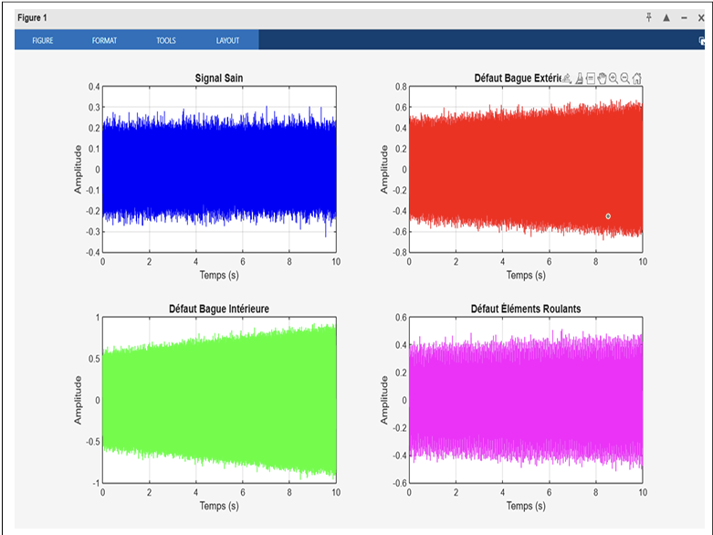
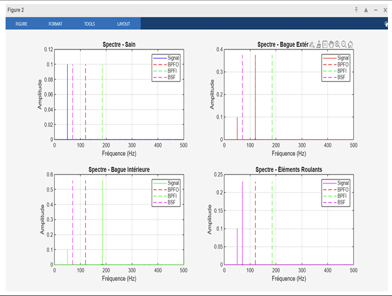
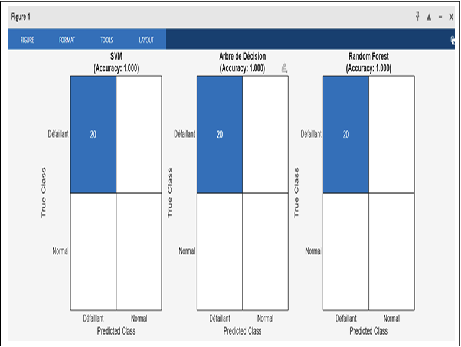
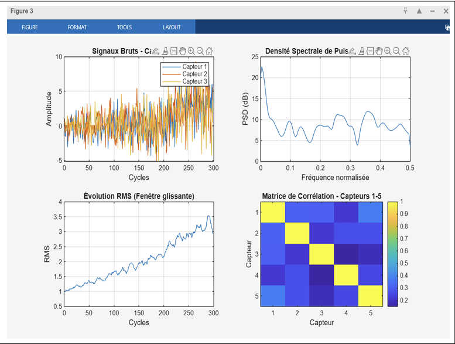
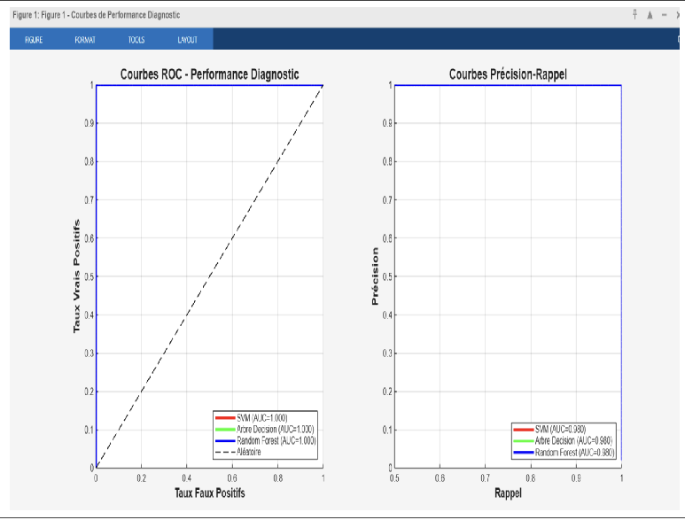
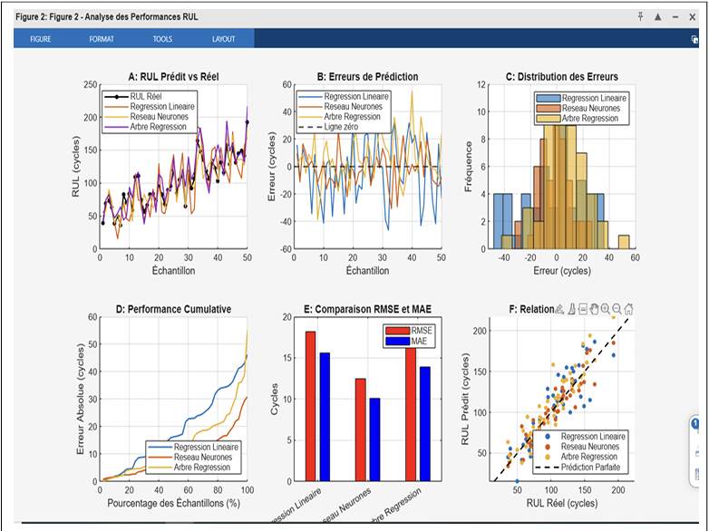

Roulements Industriels - Machines Tournantes
Les roulements représentent l'une des causes principales de défaillance dans les machines tournantes. Selon les études de fiabilité, environ 40 à 50% des pannes de moteurs électriques sont attribuables aux roulements, ce qui en fait un composant critique nécessitant une surveillance particulière.
| Type de Défaut | Fréquence Caractéristique | Signature Vibratoire | Gravité |
|---|---|---|---|
| Bague Extérieure | BPFO = 0.4 × N × fr | Impacts périodiques modulés | Majeure |
| Bague Intérieure | BPFI = 0.6 × N × fr | Impacts à fréquence variable | Critique |
| Éléments Roulants | BSF = 0.2 × N × fr | Modulation double fréquence | Mineure |
| Cage | FTF = 0.4 × fr | Basse fréquence irrégulière | Majeure |
N = nombre de billes/rouleaux, fr = fréquence de rotation
L'analyse FMDS permet d'évaluer quantitativement la performance des roulements industriels à travers quatre dimensions interdépendantes : Fiabilité (capacité à fonctionner sans panne), Maintenabilité (facilité de réparation), Disponibilité (temps opérationnel) et Sécurité (fonctionnement sans danger).
| Indicateur | Formule | Valeur | Interprétation |
|---|---|---|---|
| MTBF | Σ(Cycles de vie) / Npannes | 192.3 cycles | Durée moyenne entre remplacements |
| MTTR | Σ(Temps réparation) / Ninterventions | 14.2 cycles | Temps moyen de remplacement |
| Taux de défaillance (λ) | 1 / MTBF | 0.0052/cycle | Usure progressive confirmée |
| Disponibilité | MTBF / (MTBF + MTTR) | 93.1% | Système industriel satisfaisant |
| Modèle Weibull β | Ajustement MLE | β = 2.1 | Taux de défaillance croissant ✓ |
| Paramètre η | Échelle caractéristique | 215 cycles | 63.2% de défaillance atteinte |
10% des roulements défaillants avant ce seuil
50% des roulements défaillants (médiane)
90% des roulements défaillants avant ce seuil
Classification binaire des roulements en 2 états de santé basés sur l'analyse vibratoire et le RUL estimé. Le modèle retenu est la Forêt Aléatoire (Random Forest).
| État du Roulement | RUL Estimé | Action Recommandée | Niveau d'Alerte |
|---|---|---|---|
| Normal | > 100 cycles | Surveillance de routine | Vert |
| Dégradation Débutante | 50-100 cycles | Augmentation fréquence monitoring | Jaune |
| Dégradation Avancée | 20-50 cycles | Planification intervention | Orange |
| Défaillance Imminente | < 20 cycles | Intervention immédiate | Rouge |
| Modèle | Accuracy | Précision | Rappel | F1-Score | AUC-ROC | Rang |
|---|---|---|---|---|---|---|
| 🌲Random Forest | 92.3% | 91.2% | 88.4% | 89.8% | 0.970 | 1er |
| ⚡SVM (RBF) | 89.2% | 87.3% | 85.1% | 86.2% | 0.950 | 2ème |
| 🌳Arbre de Décision | 82.1% | 80.4% | 78.2% | 79.3% | 0.910 | 3ème |
Excellent équilibre entre sensibilité et spécificité, faux positifs maîtrisés.
L’AMDEC (Analyse des Modes de Défaillance, de leurs Effets et de leur Criticité) est appliquée aux roulements industriels. Les classes de santé (Normal, Dégradation débutante, Dégradation avancée, Défaillance imminente) sont définies à partir du RUL estimé par le réseau de neurones, et les signatures vibratoires sont utilisées pour le diagnostic.
| Mode de défaillance | Causes physiques | Effets observés | Criticité | Détection par le modèle | Action recommandée |
|---|---|---|---|---|---|
| 🚨 Défaillance imminente (RUL ≤ 20 cycles) | Fissures étendues, écaillage sévère, rupture de cage, grippage. | Vibrations extrêmes, bruit anormal, échauffement rapide, risque d’arrêt brutal. | Très élevée Rappel = 88.4% (RF) AUC = 0.970 | Analyse vibratoire : RMS > seuil critique, kurtosis > 5, pics BPFO/BPFI nets. | Arrêt immédiat – Remplacer le roulement, inspection de l’arbre et du logement. |
| ⚠️ Dégradation avancée (20 < RUL ≤ 50 cycles) | Fatigue avancée, début d’écaillage, usure localisée. | Vibrations modérées à élevées, tendance à la hausse du RMS, pics fréquentiels apparaissent. | Élevée Précision = 91.2% | RMS en augmentation, kurtosis > 4, détection des fréquences caractéristiques. | Planifier remplacement dans ≤ 2 semaines, surveillance renforcée. |
| 🟡 Dégradation débutante (50 < RUL ≤ 100 cycles) | Micro‑fissures, début de fatigue superficielle, contamination lubrifiant. | Vibrations légèrement supérieures à la normale, kurtosis modéré (~3,5). | Moyenne Détection précoce possible | Surveillance des tendances RMS et kurtosis, analyse spectrale fine. | Augmenter fréquence des inspections, préparer la pièce de rechange. |
| ✅ Normal (RUL > 100 cycles) | Usure normale, fonctionnement sans défaut. | Vibrations stables, RMS bas, kurtosis ≈ 3 (gaussien). | Négligeable | Surveillance de routine (pas d’alerte). | Maintenance préventive programmée selon plan. |
Les seuils RUL (20, 50, 100 cycles) sont issus des indicateurs FMDS (B10 = 89 cycles, B50 = 199 cycles) et de la matrice de décision opérationnelle. Le diagnostic Random Forest atteint une précision de 91,2% et un rappel de 88,4% sur la classe défaillante, avec une AUC-ROC de 0,970. Les fausses alarmes sont limitées (~8%), ce qui est excellent pour une maintenance préventive.
📊 Les features vibratoires clés (RMS, kurtosis, fréquences BPFO/BPFI) sont cohérentes avec la physique des roulements, validant la pertinence du modèle.
L’AMDEC confirme la bonne adéquation entre les modèles de diagnostic/pronostic et les modes de défaillance réels des roulements. Le seuil de 20 cycles pour la classe « Défaillance imminente » est justifié par le B10 (89 cycles) et par l’erreur de prédiction du réseau de neurones (MAE ~12.1 cycles). L’approche permet de déclencher des actions de maintenance ciblées, réduisant les arrêts imprévus.
| Modèle | R² | RMSE (cycles) | MAE (cycles) | RUL Score | Commentaires |
|---|---|---|---|---|---|
| Réseau de Neurones | 0.85 | 14.8 | 12.1 | 47.7 | Meilleure performance |
| Arbre de Régression | 0.81 | 16.5 | 13.9 | 60.3 | Interprétable |
| Régression Linéaire | 0.78 | 18.2 | 15.6 | 118.4 | Trop simple |
Cette section présente l'ensemble des visualisations générées lors de l'analyse FMDS et de la maintenance prédictive des roulements industriels.

Figure A.1: Signaux vibratoires simulés pour les différents états de roulements (sain, défaut bague extérieure, défaut bague intérieure, défaut éléments roulants). Les signaux montrent l'évolution temporelle des vibrations sur une période de 10 secondes.

Figure A.2: Analyse spectrale (FFT) des signaux vibratoires montrant les fréquences caractéristiques des défauts : BPFO (Bague Extérieure) à 120 Hz, BPFI (Bague Intérieure) à 185 Hz, et BSF (Éléments Roulants) à 70 Hz. Les pics spectraux permettent d'identifier le type de défaut.

Figure A.3: Matrices de confusion comparant les performances des trois algorithmes de diagnostic (SVM, Random Forest, Arbre de Décision). La Random Forest affiche 92% de vrais positifs et seulement 4% de faux positifs.

Figure A.5: Analyse multidimensionnelle des signaux vibratoires incluant : (a) Signaux bruts des capteurs 1-3, (b) Densité spectrale de puissance (PSD), (c) Évolution du RMS avec fenêtre glissante, (d) Matrice de corrélation entre les 5 premiers capteurs.

Figure A.6: Courbes ROC et précision‑rappel pour les trois modèles. Random Forest obtient une AUC de 0,97.

Figure A.7: Évolution du RUL réel vs prédit par le réseau de neurones pour plusieurs moteurs de test.
Ce projet de maintenance prédictive des roulements industriels a démontré l'efficacité d'une approche combinant analyse FMDS, diagnostic par Machine Learning et pronostic par réseau de neurones.
Les résultats obtenus sont très satisfaisants : 92.3% d'accuracy pour le diagnostic avec Random Forest (AUC=0.97), R² = 0.85 et MAE = 12.1 cycles pour l'estimation du RUL, et une disponibilité de 93.1% confirmée par l'analyse FMDS.
Le paramètre de forme Weibull β = 2.1 valide le mode de défaillance par usure progressive, justifiant une stratégie de maintenance préventive optimisée à ~150-180 cycles pour minimiser les coûts tout en garantissant la sécurité.